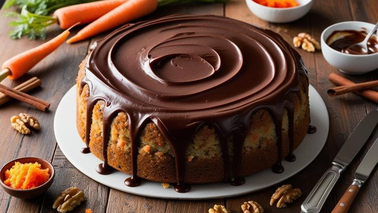
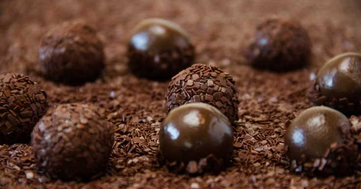

Sobre o Café </> Códigos

Seja muito bem-vindo ao Café </> Códigos! Este espaço nasceu da união de duas grandes paixões: a culinária e a programação.
Afinal, programar e cozinhar têm a mesma essência: ambas exigem atenção aos detalhes e o respeito a um algoritmo claro. Um ingrediente fora de hora altera todo o sabor da receita!
Quem trabalha ou estuda programação sabe que passar horas encarando a tela tentando resolver um bug pode ser exaustivo. Às vezes, a melhor solução para um problema no código não é insistir na tela, mas sim levantar da cadeira, passar um café fresquinho e preparar algo gostoso.
O projeto foi criado por Sabrina e Guilherme como o nosso refúgio para compartilhar receitas rápidas, reconfortantes e descomplicadas — perfeitas para aquele intervalo merecido na rotina de desenvolvimento e estudos.
Nossas Pausas Favoritas
Sabe aquela pausa do café em que você só precisa de algo doce para acompanhar? Separamos os nossos acompanhamentos favoritos para a hora de dar um reset na mente:
- Bolo de Cenoura com Calda de Chocolate (Acompanhamento perfeito para café coado)
- Brigadeiro Rápido de Panela (Para quando o código finalmente compila sem erros)
- Beijinho de Coco Prático (Leve e rápido de fazer)
- Palha Italiana Crocante (Ótima para beliscar enquanto estuda)
- Doce de Leite na Colher (A dose rápida de açúcar nos dias intensos)
Ranking de Combinações com Café:
- Bolo de Cenoura + Café Express
- Brigadeiro Tradicional + Café Carioca
- Palha Italiana + Café com Leite
- Beijinho de Coco + Chá Preto
- Doce de Leite + Café Puríssimo
Receitas Rápidas para a Pausa do Dev
1. Bolo de Cenoura Express (Para o Café da Tarde)

A Ideia: Um clássico fofinho que você bate tudo no liquidificador em menos de 5 minutos antes de voltar para a IDE.
Ingredientes: 3 cenouras, 3 ovos, 1/2 xícara de óleo, 2 xícaras de açúcar, 2,5 xícaras de farinha de trigo e 1 colher de fermento em pó.
Preparo do Dev: Bata as cenouras, ovos e óleo no liquidificador. Adicione o açúcar e bata mais um pouco. Despeje em uma tigela, misture a farinha e por fim o fermento. Leve ao forno a 180°C por 40min. Dica: prepare enquanto lê a documentação!
2. Brigadeiro de Panela "Sem Bug"

A Ideia: A receita mais rápida do Brasil para quando você precisa de um doce urgente no meio do expediente.
Ingredientes: 1 lata de leite condensado, 3 colheres de chocolate em pó (50%) e 1 colher de manteiga.
Preparo do Dev: Misture tudo na panela fria para não empelotar. Leve ao fogo baixo mexendo sem parar até começar a soltar do fundo. Pode comer na colher direto do prato assim que esfriar um pouco!